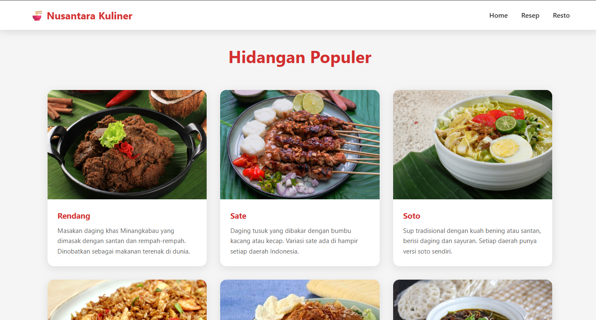
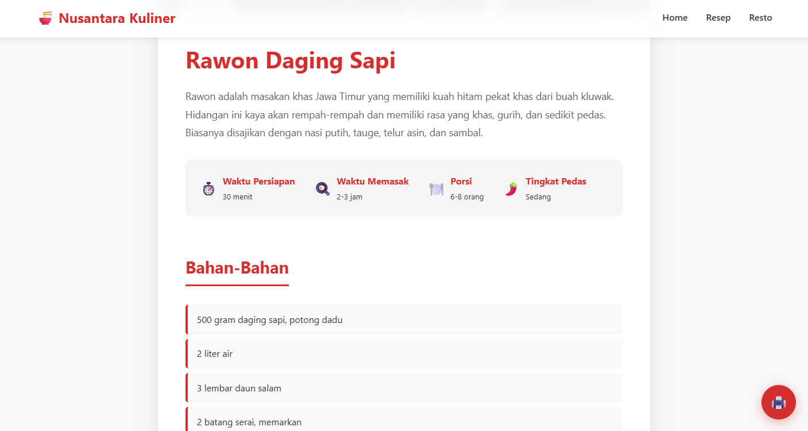
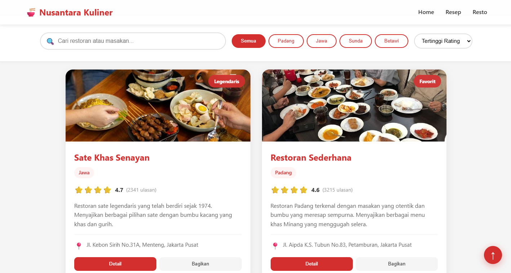

Nusantara Kuliner
Sebuah katalog digital interaktif hidangan kuliner Nusantara yang mengintegrasikan resep masakan tradisional otentik dengan direktori pencarian restoran kuliner khas daerah.
Hidangan Populer Nusantara
Halaman katalog menyajikan daftar masakan daerah legendaris Indonesia (seperti Rendang, Sate, Rawon, dan Soto) dalam bentuk visual grid card yang responsif dan memukau.
Masing-masing makanan dilengkapi gambar beresolusi tinggi, tag asal daerah, rating rasa, dan ringkasan bahan utama.
- Desain card minimalis dengan efek hover bayangan yang halus.
- Navigasi kategori dinamis untuk mempermudah pencarian.

Detail Resep Otentik
Setiap menu makanan memiliki halaman detail resep tersendiri yang menampilkan bahan-bahan yang dibutuhkan dan panduan langkah pembuatan masakan secara mendalam.
Informasi waktu persiapan, jumlah porsi, serta tingkat kesulitan masakan ditampilkan dengan ringkasan visual berupa barisan badge ikonik.
- Penataan daftar bahan dan takaran yang presisi.
- Kombinasi skema warna kontras untuk kenyamanan membaca resep di dapur.

Direktori Restoran Legendaris
Halaman direktori restoran menyajikan daftar tempat kuliner legendaris yang menyediakan hidangan Nusantara terpercaya lengkap dengan alamat dan peta navigasi.
Dilengkapi kolom pencarian interaktif dan filter kategori regional (seperti masakan Sunda, Padang, atau Jawa) berbasis tag tombol dinamis.
- Kolom filter interaktif berbasis button tag kategori.
- Sistem penilaian rating bintang yang terintegrasi.
